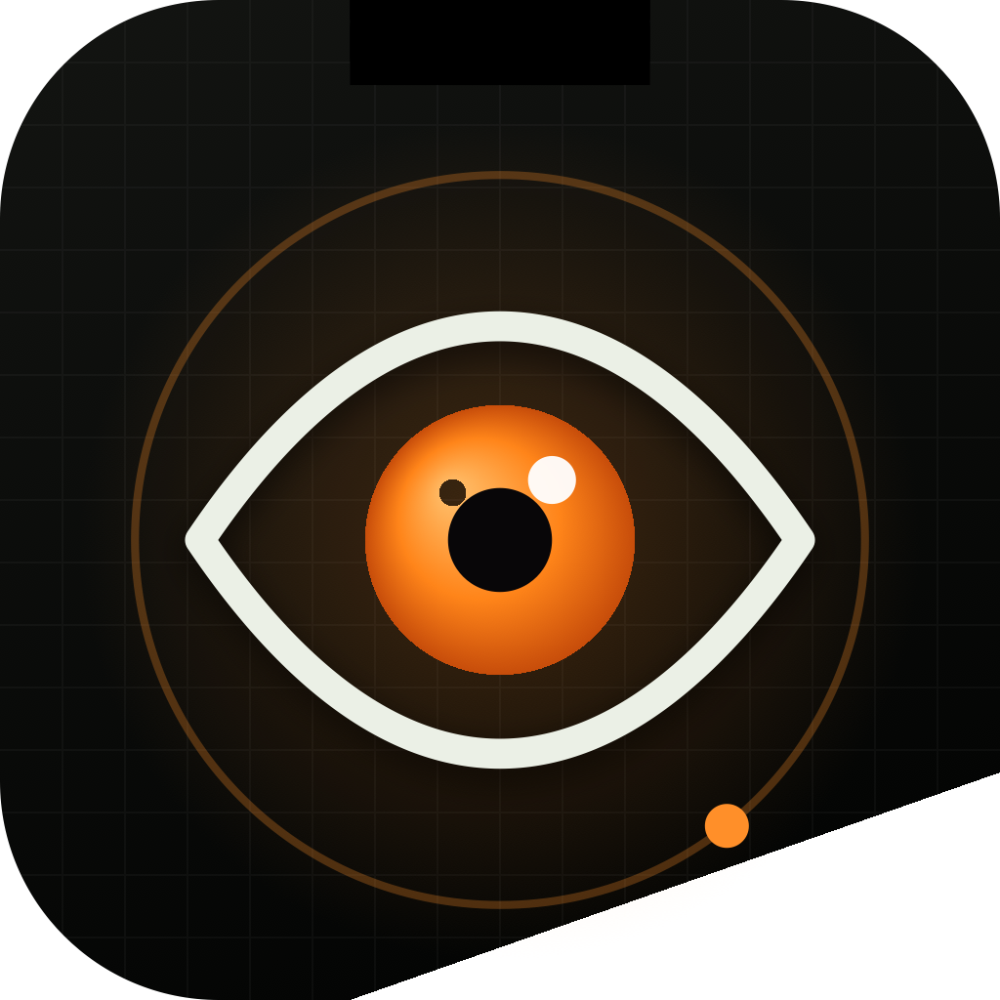

Iris is a calm, private coach that lives in your menu bar — timing your breaks, guiding real eye exercises, and telling you when to rest, before your eyes complain.
A quiet pill with a live countdown, a progress ring and an alert badge. Hover it — that's the whole dashboard peeking out.
On Macs without a notch, the same pill floats at the top-center — off by default, one toggle in Settings.
Pick a rhythm — the button below dims this page for a real Iris break, exactly like the app does on your Mac.
Dims this page for the full rest. Esc or Skip ends it early.
Every feature serves one thing: keeping your eyes fresh through long workdays — honestly measured, never nagging.
Balanced, gentle, or the classic every-20-minutes — or set any custom interval. Full-screen breaks dim everything with a live countdown.
Figure eights, sweeps, spirals, near-and-far focusing — follow the glowing dot through a 4-minute routine in full-screen Focus Mode.
A seven-day chart built only from what you actually complete. No invented streaks, no guilt loops.
See the current track and play, pause, or skip Apple Music right from your menu bar — even mid-exercise in Focus Mode.
Live weather for your city and tonight's moon phase — small calibrations for long days at the desk.
App Sandbox, no account, no tracking, no analytics. History and settings never leave your Mac.
One dark panel under the menu bar: today's break coach, your honest weekly rhythm, live weather, tonight's moon and a music chip.
A glance at the menu bar is enough to know what Iris needs from you. Four states, zero words.
Follow the glowing dot with your eyes — head still. Twelve drills, auto-advancing steps, live music. The chart on the right is the real demo.
One click dims the whole screen and plays the drill large. Auto-advancing steps, space to pause, arrows to switch, Esc to leave.
All twelve drills are browseable with live previews — play any single one, or run the four-step daily routine.
Iris is sandboxed, has no account system, and ships with a signed privacy manifest. The only outbound requests it can ever make are to the weather service — and only if you use that card.

Free for your personal menu bar. No account required.
Download Iris for macOSBlink slowly and soften your gaze.
Your screen comes back on its own.